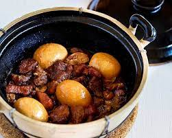

Tau You Bak

Description
Pork braised in a sweet and salty dark soy sauce.
Ingredients
600g pork belly
6 cloves garlic
2T oil
6T sugar
6T dark soy sauce
280 ml water
Steps
- Heat a wok over a high flame until it smokes. Add the oil.
- Add the pork. Seal the meat by frying over a high flame for about 3 mins.
- Lower to a medium flame, then add the garlic and sugar.
- Stir-fry until the sugar has coated and glazed the pork.
- Add the dark soy sauce and continue frying for about 2 mins.
- Add the water. Simmer uncovered until the sauce has thickened and the meat is tender, about 1 hour or preferably more.